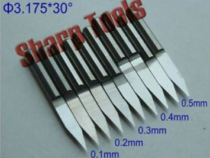
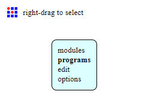
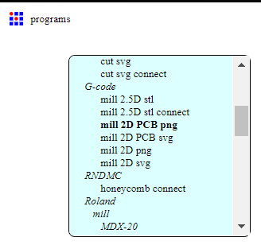
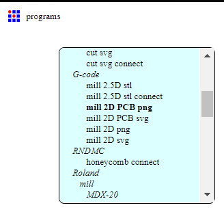

Electronics production
In this part, we will be talking about electronics production, basically, how to create our own PCBs, that sounds fun.
Introduction
So in this part, you will get to learn about PCBs, using the CNC machine for PCB creation, different types of components and some more stuff that you could be interested in.
What is a PCB?
A PCB, printed circuit board, is a manufactored board that mechanically supports and electrically connects electrical or electronic components using conductive tracks, pads and other features etched from one or more sheet layers of copper laminated onto and/or between sheet layers of a non-conductive substrate.

Why do we create PCBs?
There are many reasons to why we create our own PCBs, but mainly the reasons would be:
- customize electronics to meet product requirements.
- customized footprint for product so boards can be smaller.
- greater reliability, with something you created, you would rely on it more.
- able to prototype and perform better.
How to create PCBs?
There are also different types of methods to create PCBs. There are mainly 2 ways. Etching and machining.
- etching is when the creator uses different chemicals and other methods such as lithography or transfers to create the traces of the PCB, this method is generally not used much as the methods are pretty complex and there can also be toxic waste after finishing, these methods could be done in a factory, but in our homes, nah.
- The second method is mahining, machining is when you use tools like a CNC cutter and specific cutting bits to mill and cut out the PCBs, of course this have their own cons too like sometimes the machine is very noisy and since it is milling, there will be dust buildup, but this is a prefered method as it is way simpler to execute and the items can be easily bought, as the items are just the machine, copper boards, and the assorted drill bits, compared to the first method where you have to buy chemicals or specific materials.
To make this as simple as possible, we are going to be doing the machining method, since it is easier to understand and it is what we will be doing for this elective.
Tools to create PCB
Here are the tools to create PCBs, you will need:
- CNC machine, for this elective we will be using a stepcraft 420 CNC machine
- copper boards
- Different CNC bits, we will be using a v tip and an anvil bit. 
- double sided tape and masking tape
Steps for PCB creation
The steps for generating the file for the software and steps are all pretty easy and simple to follow
- Create your own PCB design or source it from some other website
- Create your .nc file or save it as gcode file in the software you used to design
- load your file in the stepcraft software and run the machine.
- once the board is cut out, do any cleanup and preceed to soldering.
Sonethings to take note, you can get .nc files or gcodes dirently. and all you have to do is to upload it onto the software and proceed to cutting.
Generating files with mods
In this part, you can get to learn how to generate your .nc file for the stepcraft software.
The website we will be using is mods, you can use the link here to go there: mods.cba.mit.edu
now youre inside the website, first right click and select programes.
Next select open server programes and under gcode, select mil 2d pcb png.
 

the website will now open up all the flowcharts for adjusments before calculating the .nc file.

At the furtherest left of the flowchart, it is the png image uploader, where you can use png files for your PCB from EAGLES or downloaded from the web, one thing you also have to be sure is that the image dpi must be 1000.
Now change the default settings to according the table below:

Once all settings are set and done, press the calculate button to get the .nc code.
Once the .nc code is downloaded, you can view this file in a software named CAMtronics or a online site called .nc viewer.
these allow you to view the files and show simulations of the process of cutting the boards.
When everything is checked and ok to go, you can save it in a thumbdrive and we can go proceed to use the stepcraft software to cut.
In the stepcraft software, you can use the many different functions in it,
The left side is the controls for the machine, how fast it moves, and the directions.